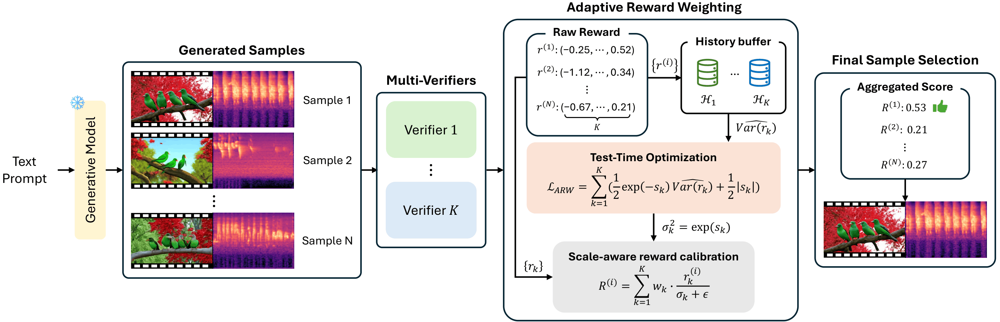

Joint audio-video generation aims to synthesize realistic audio-video pairs that are both semantically aligned with text prompts and precisely synchronized. While existing joint audio-video generation models often require substantial training resources to improve fidelity, Inference-Time Scaling (ITS) has recently emerged as a promising training-free alternative in single-modality domains. However, extending ITS from a single modality to multimodal domains is non-trivial, as it requires balancing multiple heterogeneous objectives. In this paper, we present the first comprehensive study of ITS for joint audio-video generation. We first demonstrate that a multi-verifier framework is essential to address the limitations of single-objective guidance, including asymmetric performance trade-offs and verifier hacking. Through systematic analysis, we then identify an optimal multi-verifier combination that yields balanced improvements across all quality dimensions. Finally, to effectively aggregate diverse reward signals, we propose Adaptive Reward Weighting (ARW), a novel test-time optimization algorithm. ARW treats reward aggregation as an online optimization problem, utilizing learnable parameters to calibrate reward variances without requiring prior knowledge of reward distributions, thereby ensuring robust multi-objective selection. Experimental results on VGGSound and JavisBench-mini benchmarks demonstrate that our framework significantly enhances semantic alignment, perceptual quality, and audio-visual synchronization of generated outputs.

Click to view full-resolution PDF.
① Necessity of Multi-Verifier Framework
Single verifiers fail to capture the multi-faceted nature of joint audio-video quality and are susceptible to verifier hacking — where the search exploits verifier-specific biases to inflate a single metric, producing outputs with high scores but no genuine improvement in perceptual quality or cross-modal coherence. We experimentally demonstrate that a multi-verifier framework is essential to account for all four key criteria simultaneously: semantic alignment, perceptual quality, audio-video semantic consistency, and precise synchronization.
② Optimal Multi-Verifier Combination
We identify the optimal verifier combination through systematic evaluation. Text-video consistency is prioritized as the primary signal since it most directly influences user satisfaction. We then show that incorporating audio-visual synchronization as a complementary verifier yields the most balanced improvements across all evaluation dimensions — without introducing performance trade-offs between modalities.
③ Adaptive Reward Weighting (ARW)
To aggregate heterogeneous reward signals with different scales and distributions, we propose ARW — a test-time optimization algorithm that assigns learnable calibration parameters to each reward type. By penalizing high-variance signals, ARW prevents any single reward from dominating the aggregated score, ensuring balanced multi-objective selection without requiring prior knowledge of reward distributions or offline statistics.
Featured Results
LTX-2 Demo
ITS applied to LTX-2, the most powerful audio-video generation model. Showcases text-video consistency improvements.
View Demo →Qualitative Results
Naive Sampling vs. Single-Verifier (VR-TA) vs. Multi-Verifier (ARW) side-by-side on JavisDiT.
View Demo →Qualitative Results (Fig. 1)
Main paper figure — Naive Sampling vs. Multi-Verifier (ARW) on representative examples.
View Demo →Multi-Verifier Dynamics
How adding multiple verifiers (VR, JavisScore) progressively improves generation quality.
View Demo →Supplementary Material
Prompt Test
Qualitative examples across diverse text prompts.
View →Appendix: JavisDiT
Full comparison — Naive Sampling, Single-Verifier, Multi-Verifier.
View →Appendix: MMDisCo
Without ITS vs. With ITS on cooperative diffusion.
View →Failure Cases
Cases where ITS does not fully overcome generation limitations.
View →@article{jung2026its,
title = {Inference-Time Scaling for Joint Audio-Video Generation},
author = {Jung, Jaemin and Rho, Kyeongha and Shin, Inkyu and Chung, Joon Son},
journal = {Transactions on Machine Learning Research},
year = {2026}
}